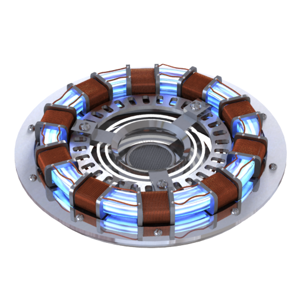

Fonti Fossili o Rinnovabili?
A quali fonti energetiche è legato il destino del pianeta Terra? Secondo qualcuno alle energie rinnovabili, secondo altri all’energia nucleare. Ma tutti concordano che il futuro dell’energia non sarà legato a petrolio o carbone.
Lo scenario che si prospetta nell’evoluzione del sistema economico
mondiale è caratterizzato da una costante crescita della domanda di
energia, sotto la spinta dell’incremento della popolazione e dello sviluppo.
Tutti i settori ne sono influenzati in modo diretto o indiretto: dalla
generazione di energia elettrica ai trasporti, dal consumo domestico e
civile alla produzione di beni e servizi.
Carbone, petrolio e gas naturale forniscono l’87% del consumo totale di energia di
tutto il mondo, ma sono tossici per quasi tutte le componenti ambientali. Per questo
molti paesi stanno cercando di trovare energie alternative, anche perché si è ormai
diffusa la consapevolezza che le riserve di petrolio si stanno esaurendo.
Le fonti energetiche alternative che alimenteranno il nostro futuro sono:
- Energia Cinetica – È l’energia prodotta da tutti gli esseri umani attraverso il movimento, come quando si fa una pedalata in bicicletta. Nel futuro, per esempio, esisteranno pavimenti attrezzati per catturare l’energia delle persone che camminano sulla loro superficie.
- Energia dei parchi solari, eolici e bio-diesel – La produzione di energia eolica, solare e bio-diesel concentrata in un unico luogo, permetterà l’ottimizzazione del rendimento energetico.
- Energia dell’idrogeno – Le attuali centrali elettriche a idrogeno utilizzano un mix tra combustibili rinnovabili e fossili. Nei prossimi anni, attraverso turbine ad energia solare, verrà eliminata la necessità di bruciare combustibili fossili per produrre idrogeno.
- Energia del moto ondoso – Le onde non si limitano alle zone costiere ma si formano soprattutto in mare aperto.
- Energia mareomotrice – Viene prodotta da turbine che utilizzano la forza delle maree per generare elettricità.
- Energia geotermica – Questa energia proviene dal nucleo della Terra, a circa 4.000 metri sotto la superficie. È certo che questa fonte energetica durerà a lungo, molto di più di tutti i combustibili fossili.
- Bioenergia – È una fonte energetica derivante da organismi biologici.
- Energia solare – Non è una fonte energetica nuova, dal momento che già nel 1767, lo scienziato svizzero Horace de Saussure, costruì il primo dispositivo alimentato da energia solare.
- Energia idroelettrica – È una fonte energetica molto utilizzata in tutto il mondo, grazie al fatto di essere poco costosa, pulita ed efficiente.
- Energia eolica – I primi impianti, nella storia recente, per ricavare energia dal vento risalgono al 1980, quando in California vennero installati i primi parchi eolici.
| Fossili | Rinnovabili |
|---|---|
| Limitate (le risorse presenti nel mondo stanno per esaurirsi) | Illimitate (il sole, l’acqua, il vento, la geotermica sono rinnovabili e illimitate) |
| Causano inquinamento atmosferico ed emissioni di CO2 e gas serra | Non inquinano, non emettono anidride carbonica / gas a effetto serra |
| Localizzate solo in pochi Paesi (tensioni geopolitiche e conflitti) | Sono ovunque: il sole splende in tutto il mondo |
| Rischi durante il trasporto (petroliere, oleodotti…) | Nessun rischio di trasporto |
| Sono il passato | Sono il futuro |
L’energia rinnovabile e’ prodotta sfruttando la radiazione solare, il vento, le risorse idriche, la fotosintesi che si accumula nella biomassa e nell’energia geotermica. tutte queste fonti sono inesauribili, pulite ed ecosostenibili. solo grazie all’utilizzo di queste fonti possiamo immaginare le citta’ del domani come dei luoghi piu’ verdi, piu’ vivibili e piu’ a misura d’uomo e natura, citta’ fatte per essere vissute dalle generazioni a venire. per questo l’energia pulita e’ il futuro.sorse idriche, la fotosintesi che si accumula nella biomassa e nell’energia geotermica. tutte queste fonti sono inesauribili, pulite ed ecosostenibili. solo grazie all’utilizzo di queste fonti possiamo immaginare le citta’ del domani come dei luoghi piu’ verdi, piu’ vivibili e piu’ a misura d’uomo e natura, citta’ fatte per essere vissute dalle generazioni a venire. per questo l’energia pulita e’ il futuro.
Centrale a Fusione
Funzionamento
In tutto il mondo si stanno conducendo esperimenti per ottenere la fusione su larga scala. Per raggiungere le temperature che rendono possibile la fusione, all'interno di un reattore a fusione vengono riscaldati atomi di idrogeno. I nuclei vengono separati dagli elettroni dando vita al plasma. Il plasma deve essere mantenuto ad una temperatura di 14 milioni di gradi se si vuole che la fusione abbia luogo. Il reattore in figura , il Tokamak, realizza la fusione nucleare mediante il confinamento magnetico. La camera di confinamento è un grande anello metallico, circondato da magneti superconduttori, al cui interno viene fatto circolare il plasma. L'energia prodotta è sotto forma di neutroni energetici che, sfuggendo al campo magnetico, vengono intrappolati in una camicia contenente Litio. I neutroni reagiscono col Litio e producono Tritio ed Elio, che vengono separati ed estratti. Il calore prodotto dalla reazione, viene ceduto a uno scambiatore dove si produce il vapore che viene avviato alle turbine e al condensatore; il generatore poi produce l'energia elettrica che viene immessa in rete.
Impatto Ambientale
La fusione nucleare è estremamente sicura a parte la radioattività del Tritio. Lo sfruttamento dell'energia nucleare da fissione, invece, comporta l'impiego e la produzione di materiali che emettono radiazioni alfa, beta e gamma che danneggiano in modo grave i tessuti biologici, in quanto possono intaccare il patrimonio genetico delle cellule, causando il cancro o mutazioni genetiche ereditarie.Impiegando una torre di refrigerazione, per condensare il vapore a bassa temperatura in uscita dal turbo-alternatore, si eviterebbe l'alterazione dell'ecosistema di un eventuale corpo idrico come in tutte le centrali termiche che scaricano calore residuo.
L'impianto, però, come tutte le altre centrali del resto, occupando una certa superficie, normalmente recintata, allontana dalla zona la fauna e, i vari edifici connessi al suo funzionamento comportano sempre un certo impatto sull'ambiente dal punto di vista paesaggistico.
Nella sala macchine sia le turbine, sia i generatori di corrente producono un rumore costante di parecchi decibel che, a lungo andare, provoca danni all'udito degli operatori, per cui, questi, devono essere sottoposti a periodici controlli medici.
Le macchine elettriche, quali gli Alternatori e le Dinamo, per effetto dello strisciare delle spazzole sul collettore generano un certo scintillio. L'arco voltaico scompone l'Ossigeno dell'aria O2 in O, che legandosi poi ad altre molecole, forma Ozono O3, gas velenoso dal caratteristico odore di aglio.